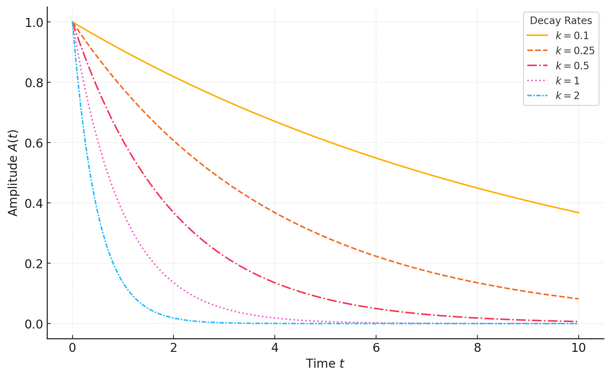

Differential Equations#
Introduction to Differential Equations#
A differential equation is an equation that relates a function to its derivatives. Differential equations describe how a quantity changes in relation to other quantities and are used to model a wide variety of physical, biological, and economic systems. In these equations, the unknown is often a function, such as \( y(x) \), and the goal is to solve for this function given its rate of change or its relationships with other variables.
Types of Differential Equations#
Differential equations come in many forms, but they can generally be classified by:
Order: The order of a differential equation is the highest derivative that appears in the equation. For example:
A first-order differential equation involves only the first derivative, \(\frac{\mathrm{d}y}{\mathrm{d}x}\).
A second-order differential equation involves up to the second derivative, \(\frac{\mathrm{d}^2 y}{\mathrm{d}x^2}\).
Linearity: A differential equation is called linear if the unknown function and its derivatives appear to the first power and are not multiplied together. If terms like \( y^2 \) or \( y \cdot \frac{\mathrm{d}y}{\mathrm{d}x} \) appear, the equation is nonlinear.
Common Types of First-Order Differential Equations#
For first-order differential equations, which involve only the first derivative of the function, some common forms include:
Separable Equations: These can be expressed as the product of a function of \( x \) and a function of \( y \). They can be solved by separating variables and integrating both sides.
Linear Equations: These have the form \(\frac{\mathrm{d}y}{\mathrm{d}x} + p(x) y = q(x)\), where \( p(x) \) and \( q(x) \) are functions of \( x \). They can be solved using an integrating factor.
Applications of Differential Equations#
Differential equations are essential in modeling real-world phenomena where change is involved. Some common applications include:
Physics: Modeling motion, fluid dynamics, and thermodynamics.
Biology: Modeling population dynamics, the spread of diseases, and biological processes.
Economics: Modeling growth, interest rates, and market behavior.
Chemistry: Modeling reaction rates and chemical kinetics.
In each case, a differential equation provides a relationship that defines how variables evolve over time or in response to changes in other variables. Solving a differential equation allows us to predict future behavior, understand stability, or analyze system responses to different inputs.
Differential equations are the backbone of mathematical modeling, and learning to solve them provides a powerful toolset for understanding and predicting dynamic systems.
Separable Equations#
A separable equation has the form:
This allows us to rewrite it as:
so that we can integrate each side separately.
Examples#
Solve the equation:
Rewrite as:
Integrate both sides:
This gives:
Exponentiate both sides to solve for \( y \):
Consider the equation:
Rewrite it to separate variables:
\[\frac{1}{y} \, \mathrm{d}y = \frac{3}{2x} \, \mathrm{d}x\]Integrate both sides:
\[\int \frac{1}{y} \, \mathrm{d}y = \int \frac{3}{2x} \, \mathrm{d}x\]This yields:
\[\ln |y| = \frac{3}{2} \ln |x| + C\]Simplify by exponentiating both sides:
\[y = e^C \cdot x^{3/2}\]Letting \( e^C = C' \), where \( C' \) is a new constant, we get the solution:
\[y = C' x^{3/2}\]
In this example, we separated the variables, integrated both sides, and then simplified to find the solution. The result, \( y = C' x^{3/2} \), shows how \( y \) changes as a power function of \( x \).
Understanding the Rate of a Chemical Reaction#
In a chemical reaction, the rate at which reactants are converted into products depends on the concentration of the reactants. This relationship between reaction rate and concentration is often governed by rate laws, which describe how the rate changes as a function of the concentrations of the reactants.
Writing a Rate Law#
The rate law for a reaction is an expression that quantifies the reaction rate in terms of the reactant concentrations. For a general reaction where reactant \( A \) transforms into product \( B \):
If this reaction is first-order with respect to \( A \), the rate law is written as:
where \( k \) is the rate constant. Here, the rate of change in concentration of \( A \) is proportional to \([A]\).
Setting Up the Differential Equation#
To convert the rate law into a differential equation, we recognize that the rate of the reaction describes the rate of change of the concentration of the reactant or product with respect to time. If we let \([A](t)\) represent the concentration of \( A \) at time \( t \), the rate of decrease in \([A]\) is:
This negative sign indicates that the concentration of \( A \) decreases over time as it converts into \( B \). This differential equation can then be solved to find \([A](t)\) as a function of time.
Differential Equations for Different Reaction Orders#
The rate of a reaction tells us how fast the concentration of a reactant or product changes with time. This rate depends on the reaction order, which determines how the concentration of reactants affects the reaction rate. Let’s examine differential equations for first-order, second-order, and some mixed-order reactions in detail.
First-Order Reactions#
For a first-order reaction, the rate of reaction is directly proportional to the concentration of a single reactant. A classic example is:
The rate law for this reaction is:
where \( k \) is the rate constant. This means that the rate of decrease in the concentration of \( A \) is proportional to \([A]\), leading to the differential equation:
Solution:
This differential equation is separable, and we can solve it by rearranging terms:
Integrating both sides with respect to \( t \):
Exponentiating both sides:
where \([A]_0\) is the initial concentration of \( A \) at \( t = 0 \). This exponential decay function describes how the concentration of \( A \) decreases over time in a first-order reaction.

This figure illustrates the solutions to the differential equation \( A' = -kA \) for various decay rates (\( k = 0.1, 0.25, 0.5, 1, 2 \)). The amplitude \( A(t) = A_0 e^{-kt} \) decreases exponentially over time. Different line styles represent the impact of the decay constant, smaller \( k \) values result in slower decay, whilst larger \( k \) values cause faster decay.
Second-Order Reactions#
Second-order reactions involve rate laws that are proportional to the square of a reactant’s concentration or to the product of two different reactant concentrations. Second-order reactions can be classified into different types:
Second-Order, Two Reactants (e.g., \( A + B \longrightarrow C \))#
For a reaction where two different reactants, \( A \) and \( B \), combine to form a product \( C \):
the rate law is:
This leads to the system of differential equations:
If the initial concentrations of \( A \) and \( B \) are equal, say \([A]_0 = [B]_0\), then we can assume \([A] = [B]\) throughout the reaction. This simplifies the rate law to:
and we solve it as in the first type of second-order reaction.
However, if \([A]_0 \neq [B]_0\), we need to solve the differential equation with both \([A]\) and \([B]\) changing over time, which can be more complex and typically requires integration using initial concentrations and stoichiometric relationships.
Second-Order, Single Reactant (e.g., \( 2A \longrightarrow B \))#
For a reaction where two molecules of \( A \) react to form \( B \):
the rate law is:
This means that the rate of change of \([A]\) is proportional to the square of \([A]\), leading to the differential equation:
Solution:
To solve this differential equation, we separate variables:
Integrate both sides:
Solving for \([A]\), we get:
where \([A]_0\) is the initial concentration of \( A \). In this form, we see that the concentration \([A]\) decreases over time in a manner inversely proportional to time, unlike the exponential decay in first-order reactions.
Handling Complex Reactions#
Some reactions may exhibit rate laws that do not fit neatly into first or second order; for example, reactions that are pseudo-first-order or involve autocatalysis.
Pseudo-First-Order Reactions#
A reaction might be second-order in principle, but if one reactant’s concentration is held constant (e.g., because it is in large excess), the reaction can appear to be first-order with respect to the other reactant. For example, if \( A + B \longrightarrow C \) occurs with \([B]\) in large excess, we treat \([B]\) as approximately constant, giving a rate law:
where \( k' = k[B] \) is an effective rate constant. The reaction then follows pseudo-first-order kinetics:
which we solve as a first-order reaction.
Autocatalytic Reactions#
In autocatalysis, one of the products acts as a catalyst for the reaction, meaning the reaction rate depends on both the concentration of the reactant and the concentration of a product. For example, if:
with \( A \) also acting as a catalyst, the rate law might be:
This leads to a differential equation similar to those for second-order reactions but requires special treatment due to the product’s role in catalysing the reaction.
Other Applications#
First-order separable differential equations frequently arise in various scientific contexts. Here are some notable examples:
Radioactive Decay (Exponential Decay)#
Equation:
where \( N(t) \) is the quantity of a radioactive substance at time \( t \), and \( k \) is the decay constant.
Separable Form:
Application:
Predicting the remaining quantity of a radioactive isotope over time.
Newton’s Law of Cooling#
Equation:
where \( T(t) \) is the temperature of an object, \( T_\text{ambient} \) is the surrounding temperature, and \( k \) is the cooling constant.
Separable Form:
Application:
Modelling the cooling or heating of an object relative to its environment.
Population Growth (Logistic Growth with No Carrying Capacity)#
Equation:
where \( P(t) \) is the population size, and \( r \) is the growth rate.
Separable Form:
Application:
Modelling exponential population growth in ideal conditions.
Motion Under Gravity (Free-Fall with Air Resistance)#
Equation:
where \( v(t) \) is the velocity of the object, \( g \) is the gravitational acceleration, \( k \) is the drag coefficient, and \( m \) is the object’s mass.
Separable Form (Simplified):
Application:
Modelling the motion of falling objects with air resistance.
Mixing Problems#
Equation:
where \( A(t) \) is the amount of solute in a tank, \( r_\text{in} \) and \( r_\text{out} \) are the inflow and outflow rates, \( C_\text{in} \) is the concentration of the inflow, and \( V \) is the tank volume.
Separable Form (Assuming \( V \) is constant):
Application:
Modelling solute concentration changes in a mixing tank.
Simple Electric Circuits (RC Circuits)#
Equation:
where \( Q(t) \) is the charge on a capacitor, \( R \) is resistance, and \( C \) is capacitance.
Separable Form:
Application:
Analysing the discharge of a capacitor in an RC circuit.